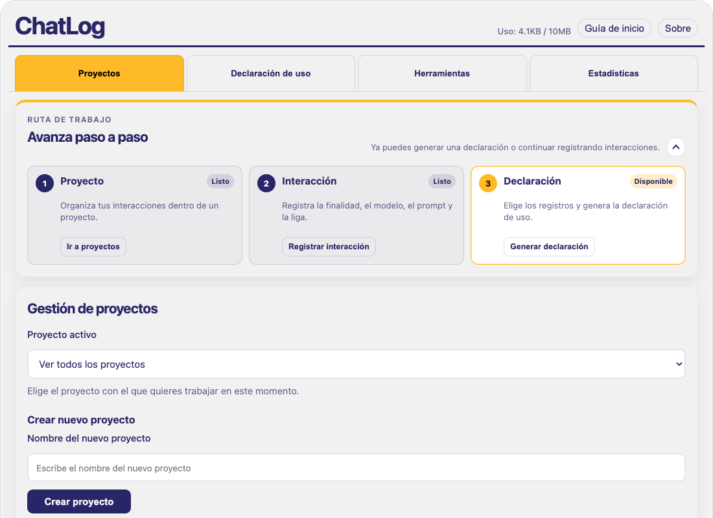

Organiza por proyectos
Agrupa las interacciones de una tesis, una clase o un ensayo en un mismo lugar.
EXTENSIÓN PARA CHROME · VERSIÓN 2.0
Documenta el uso de inteligencia artificial con integridad académica y trazabilidad.
De una consulta a una decisión. De tus registros a una declaración de uso. ChatLog acompaña el trabajo que hay detrás de cada entrega.
Acceso abierto · Registros locales · Responsabilidad humana
CONVERSACIÓN CON IA
Escribe una consulta ↑
PROYECTO ACTIVO
Seminario de investigaciónRepresentación ilustrativa del panel lateral.
Docencia
/Estudio
/Investigación
DEL PROCESO A LA EVIDENCIA
Registrar qué pediste es el comienzo. Explicar cómo revisaste y utilizaste la respuesta es lo que da sentido a tu bitácora.
Agrupa las interacciones de una tesis, una clase o un ensayo en un mismo lugar.
Anota el modelo, la finalidad, el prompt, la etapa del trabajo y tu verificación humana.
Selecciona los registros y genera un texto que explique cómo utilizaste la IA.
PRUÉBALO AQUÍ
Elige un caso académico, ajusta el registro y observa cómo se transforma en una declaración.
Datos ficticios. Los cambios permanecen en esta página hasta que la recargas. No se consulta ningún LLM.
DOCUMENTACIÓN ACADÉMICA
Revisa y adapta el texto a los criterios de tu curso, institución o publicación. Esta demo simplifica el flujo de la extensión; no certifica el cumplimiento de una norma.
CONOCE LA EXTENSIÓN
Explora las secciones de ChatLog V2. Capturas de la interfaz con datos de ejemplo.

Exporta un proyecto en JSON para transferirlo o utiliza CSV para revisar los registros en una hoja de cálculo.
Consulta estadísticas e identifica registros que requieren completar su documentación.
Relaciona cada consulta con su finalidad, su etapa de trabajo y las decisiones que tomaste.
TUS REGISTROS, BAJO TU CONTROL
La extensión guarda los registros en el almacenamiento local de Chrome. Tú decides cuándo exportarlos y con quién compartirlos.
Consultar la política de privacidadACOMPAÑAMIENTO
Consulta los procedimientos paso a paso en PDF.
02 / APOYOResuelve dudas con el asistente en ChatGPT.
03 / APOYOExplora el acompañamiento en Google Gemini.
El manual es de acceso público. Los asistentes abren servicios externos que pueden solicitar inicio de sesión.
Es una extensión de Chrome para documentar el uso de IA. Registra la información que introduces; no sustituye al LLM ni captura automáticamente todas tus conversaciones.
Abre la ficha de Chrome Web Store desde el botón de instalación, elige «Añadir a Chrome» y confirma. Fija el ícono de ChatLog y haz clic en él para abrir el panel lateral. Utiliza Chrome de escritorio compatible con la extensión.
No. Es un apoyo para explicar el proceso. Debes revisar la declaración y contrastarla con las reglas de tu curso, institución o revista. La responsabilidad académica permanece en quien firma el trabajo.
En el almacenamiento local de la extensión, dentro de tu perfil de Chrome. Exporta respaldos JSON periódicamente y antes de cambiar de equipo o desinstalarla. La demo de esta web no guarda registros en la extensión.
No. Puedes probar la demo desde el navegador. Para utilizar la bitácora en tus propios proyectos, instala la extensión en Chrome de escritorio.
UN PROYECTO ACADÉMICO DE ACCESO ABIERTO
ChatLog es un proyecto del Dpto. de Ciencias Sociales y Políticas de la Universidad Iberoamericana Ciudad de México, con apoyo de la Dirección de Innovación Educativa.
Responsable académica: Dra. Teresa Márquez